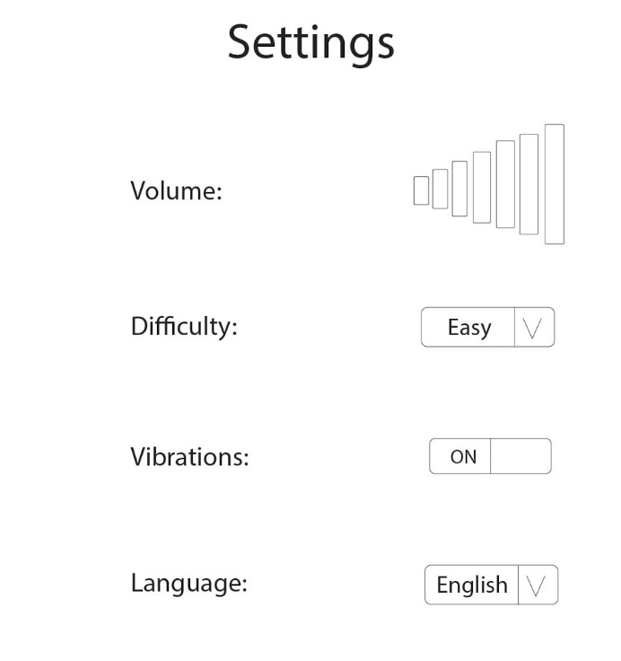

Menu ☰
Home
User Interface Design
The Queensland Police Service (QPS) have expressed their needs for an app that can be pre-installed on all Samsung devices, presenting “Fiscal’s Five Tips to help protect your identity”. This document proposes the design of an app to help young people learn about fraud on the internet and how to protect themselves. This application in development will help children between the ages of 3 to 12, and guardians, be aware of the dangers of online fraud and how to combat them.
The team did some research and we decided that the way we can get the kids engaged is to make a series of comics, QPS had already provided us with short animations they are currently using. We used these animations and turned them into comics.
The two above wireframes are for the two comics I wrote. The intention of drawing our wireframes in a way that was to not only show how we want our storyline to appear, but in a way that can convey how we want a comical style as well.

These images are low fidelity images that I was asked to create just so we had some idea of what it would look like and what the achievement names are called.
The two images above are what the team decided how this application should flow. We wanted some sense of progression/replayability so users did not become bored so we had two different designs one for before the comics were complete and one for after.
Once all the proper reseach and documentation were completed we needed a colour scheme for the application and as a team we came up with the colour pallet shown above.

Finally the above images are the final designs that I created for the project